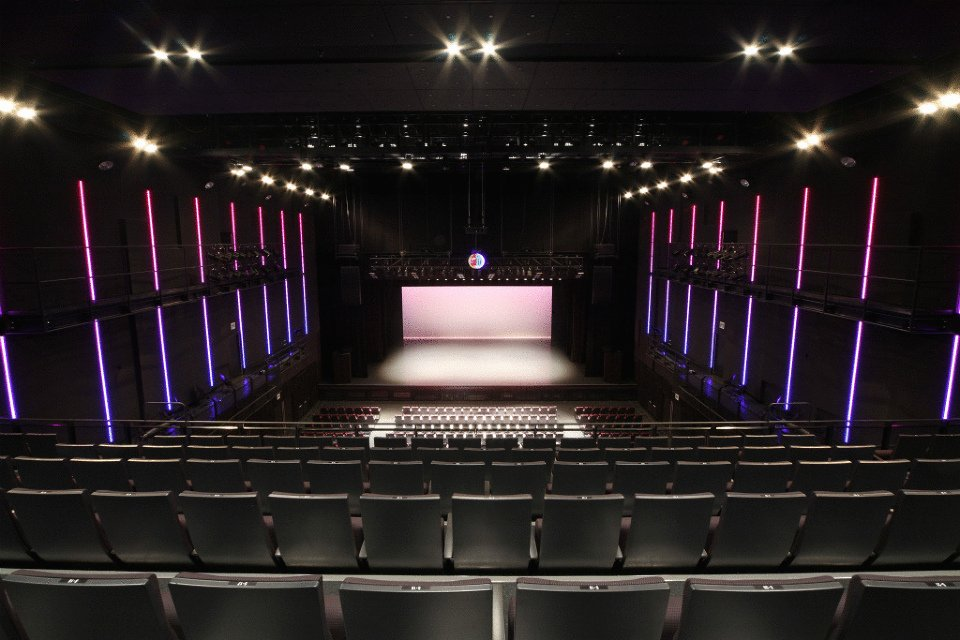
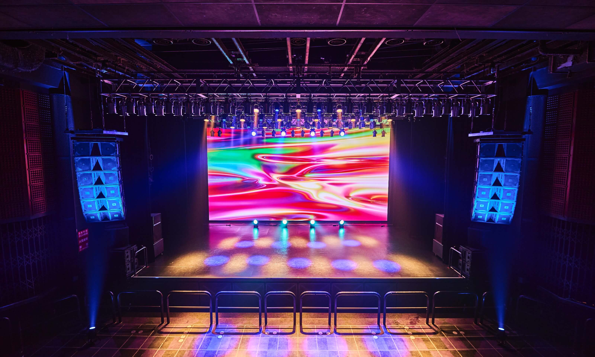

Le Grand Beatbox Battle 2023 prendra place au EX-THEATER à Tokyo, au Japon, du 18 au 21 octobre 2023, avec le 7toSmoke Battle à l’Afterparty le 22 dans une autre salle, le Spotify O-EAST.
 Après avoir reporté le Grand Beatbox Battle en 2022, Swissbeatbox a décidé une fois de plus de prolonger l'événement d'un jour, transformant les principales battles du GBB 2023 en un événement de quatre jours ! L'afterparty 7toSmoke sera un cinquième jour supplémentaire et officiel.
1. L'événement principal dure un jour de plus (événement de quatre jours) :
2. Nous avons ajouté et modifié certaines des catégories :
3. Les catégories, les places génériques et le nombre total de participants pour l'édition 2023 sont :
4. Nous n'organiserons pas de battle de loopstation par équipe pour GBB23. Il ne s'agit pas d'une annulation définitive, simplement d'un report à un futur GBB.
5. Chaque catégorie aura ses qualifications grâce à des wildcards. Seule la catégorie solo aura des événements en direct qui se qualifieront en plus des wildcards. Chaque continent auront des championnats de qualification
6. Personnes déjà qualifiées pour le GBB23 :
7. Si l'une de ces personnes pré-qualifiées ne peut pas participer ou annuler, elle sera remplacée par un gagnant wildcard de GBB23.
8. Outre la catégorie U18, vous devez avoir plus de 16 ans pour participer au GBB23.
9. Pour la catégorie U18, si vous avez 16 ou 17 ans au moment de l'événement, vous pouvez entrer à la fois dans la catégorie U18 et dans la catégorie principale Solo avec une entrée générique. Les juges jugeront la wildcard dans les deux catégories. Si vous entrez dans les deux catégories après la fin de toute la compétition wildcard, vous DEVEZ renoncer à votre position dans la catégorie U18 et concourir uniquement dans la catégorie principale Solo. Si vous ne faites pas partie de la catégorie Solo à la fin du deuxième tour de jugement (voir ci-dessous), mais que vous vous qualifiez pour les U18, vous pourrez alors participer à cette catégorie normalement. Si vous parvenez aux deux et décidez de ne pas vous battre en solo mais uniquement en U18, vous serez disqualifié des deux, car vous aurez pris la place d’un autre participant qui aurait pu se qualifier pour le deuxième tour. En acceptant de participer au deuxième tour des wildcards, vous acceptez qu’en cas de défaite, vous perdrez votre place en U18.
10. Les résultats des juges individuels seront toujours partagés, mais de manière anonyme. Les artistes, les tag team et les crews peuvent contacter directement les juges et demander des commentaires sur leurs wildcards en privé.
11. Les pré-éliminations des 7 To Smoke auront lieu le jour même de l'événement. Il y aura une élimination ouverte pendant environ 2 heures. Les participants GBB, les juges, et tout le reste est autorisé à participer au 7 To Smoke. Pour l'élimination, vous devez avoir 18 ans et plus (sauf si vous êtes un participant GBB).
12. Enfin, tous les gagnants wildcard recevront un cash prize. Cependant, cela vient avec un certain nombre de termes et conditions. Notez que cet argent fait partie d’un fond d’investissement pour les futurs artistes du GBB23. Si vous ne vous rendez pas à l'événement en direct pour de quelconques raisons, à l’exception d’un événement que vous ne contrôlez pas, vous devrez rendre ce cash prize car cela fait partie d'une entente et d'un accord selon lequel vous ferez tout ce qui est en votre pouvoir pour être présent au GBB23.